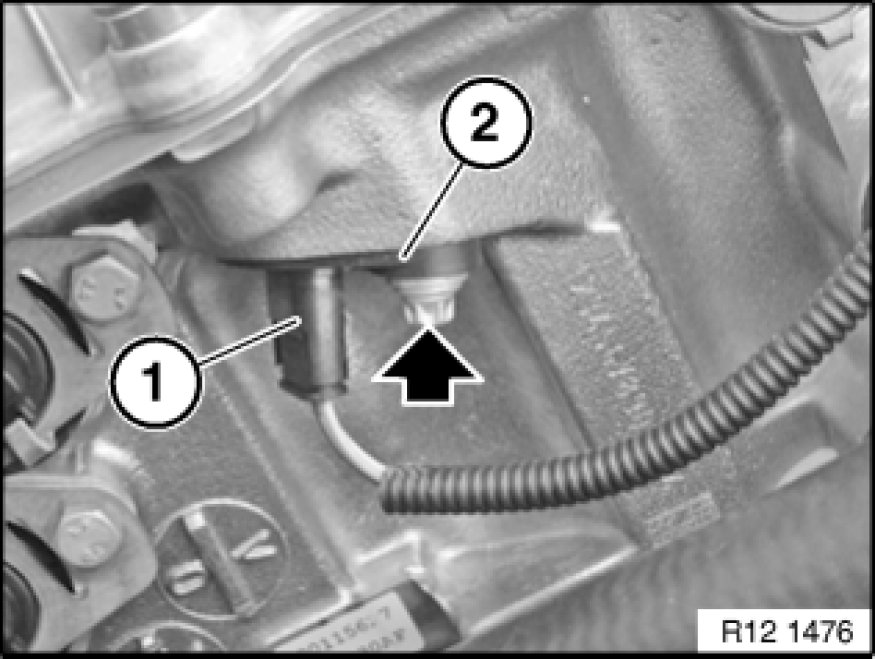

Replacing Inlet Camshaft Pulse Generator (N52/N52K/N51/N53)
12 14 523 - Replacing inlet camshaft pulse generator (N52/N52K/N51/N53)

Important!
Read and comply with notes on protection against electrostatic damage (ESD protection) 61 35 ... Notes on ESD Protection (Electro Static Discharge).

Necessary preliminary tasks:
- Read out fault memory of DME control unit
- Switch off ignition
- If necessary, remove radiator cover

Unlock plug (1) and remove.
Release bolt.
Installation Note:
Replace screw.
Tightening torque 12 14 3AZ 12 14 Electronic Shift Units or Control Units.
Remove pulse generator (2).

Note:
Check stored fault messages.
Now clear the fault memory.